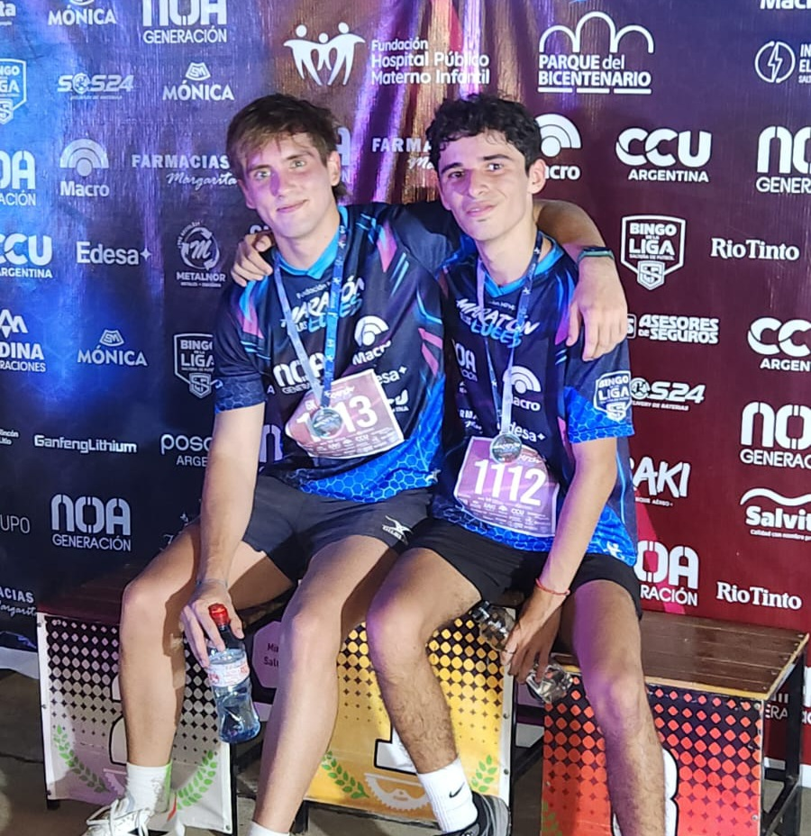
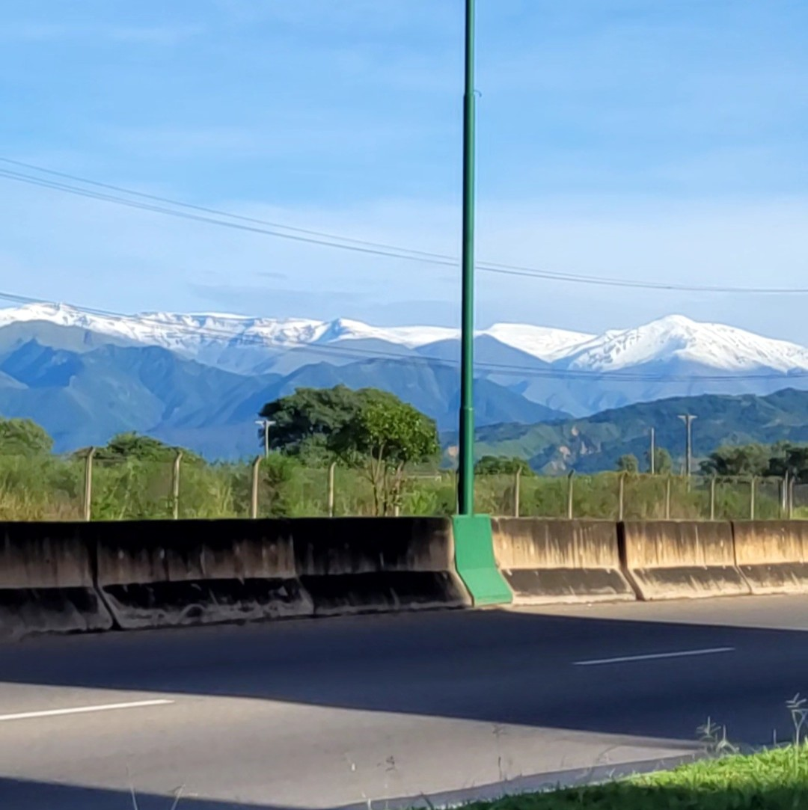
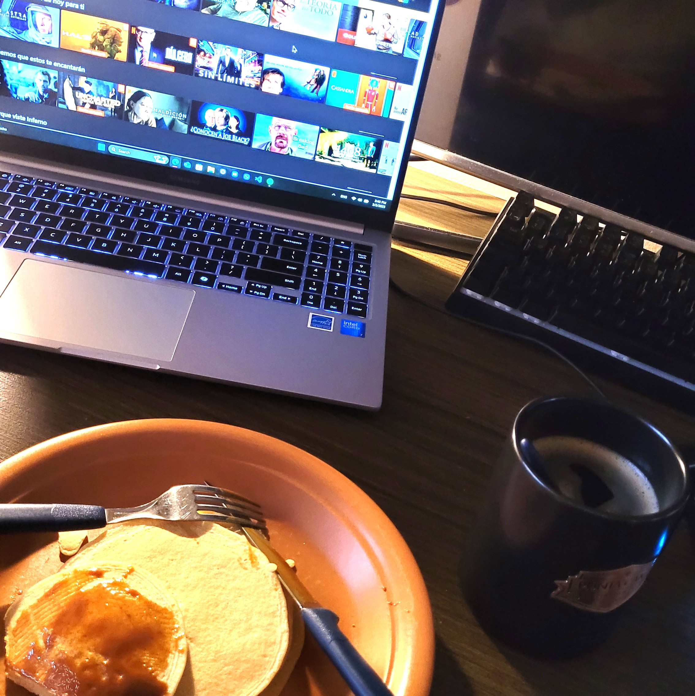
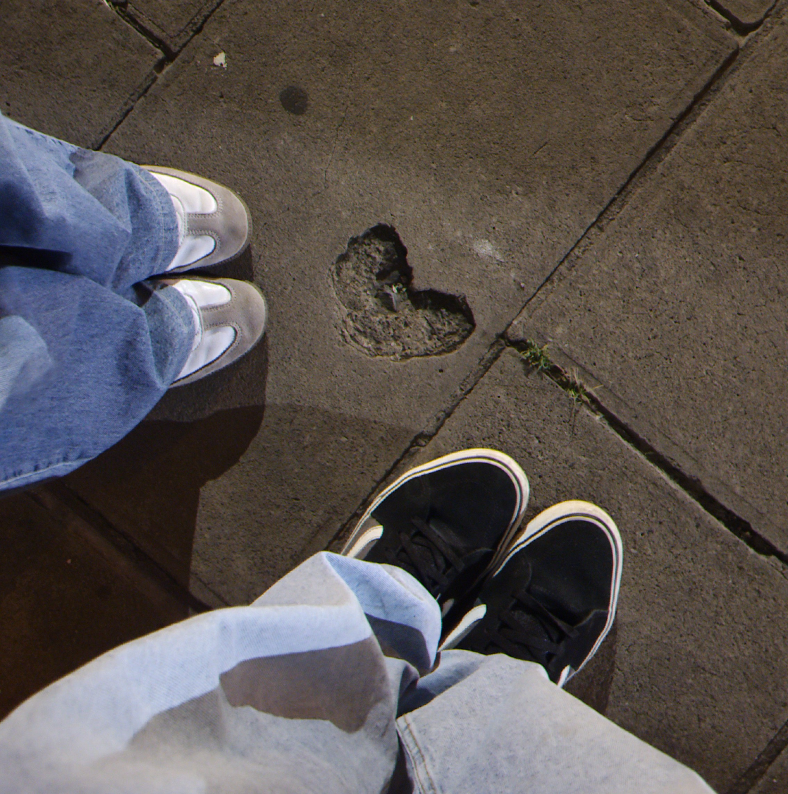
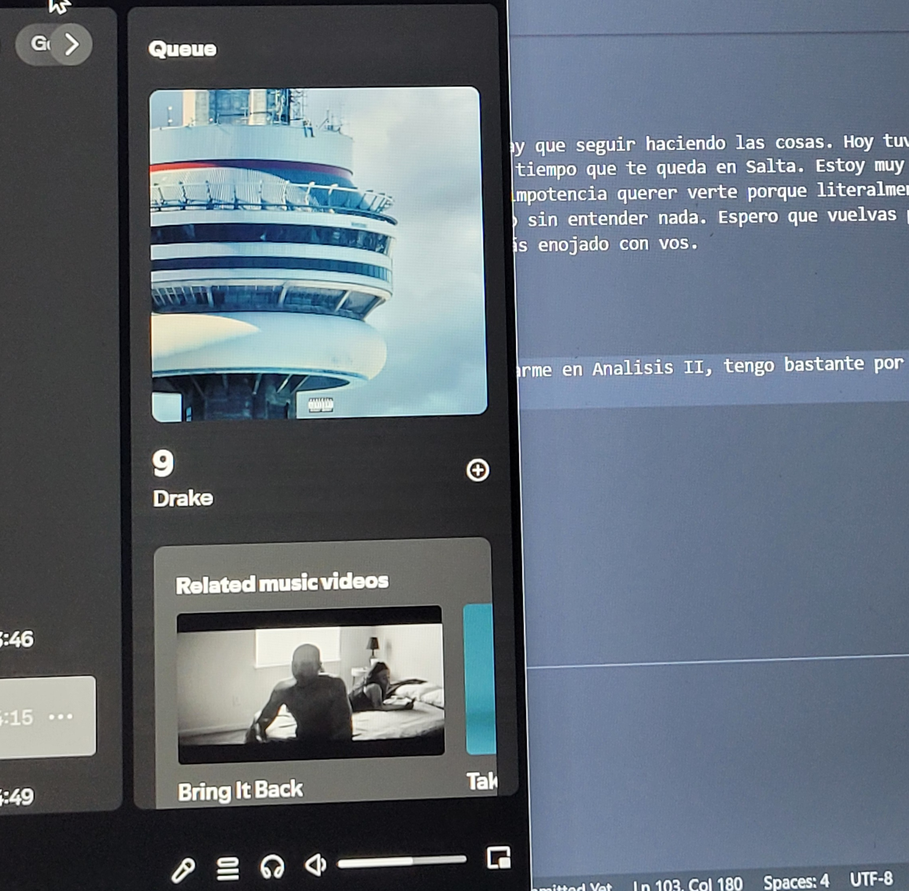

216 días escribiéndote
22/02/2025
Hi darling. Hoy es un dia especial, corro la Maratón de las Luces. Estarás presente en cada metro y segundo que haga. Te extraño.

23/02/2025
AIXA HICE LOS SEIS KILOMETROS EN 30 MINUTOS. I can't believe man. Quedé 5to y Juancho 4to (eran 12 competidores), te prometo que la próxima me esforzaré más. Me ayudaste mucho a terminar la carrera, eran pocos kilometros pero iba a un ritmo que no estaba acostumbrado. Tuve un pico de 190 BPM, pensé que me iba a explotar el cora. Sin embargo, te veía al final en la meta y esa fué mi mayor motivación. Gracias
24/02/2025
Son las 02:10 am, debería estar inscribiendome a todas las materias pero la página de la facultad no funciona. Espero que mañana a la mañana esté disponible. Me dijiste que esta semana te ibas a operar el ojo, sigo pensando en la operación. I miss you. No sabes, estoy por anotarme en el programa de EducationUSA, me hace mucha ilusión. Me gustaría que estés acá para contarte todo.
24/02/2025 11:00 am
No sabes lo que estoy sufriendo con esta plataforma de inscripción, cargo con un estrés; entre las horas de sueño y las peleas con los directivos de la facultad. Ojalá se solucione rapido
25/02/2025
Love is a choice and I choose you

25/02/2025 11:29 pm
No sé cual es el motivo de esto, la verdad es que no se qué espero ni a qué aspiro. Sigo profundamente enamorado de vos, me aceptaste esa carta y no se si fué por pena o porque sentís lo mismo que yo.
26/02/2025
Estoy en otro país, estoy participando en WRO, estoy becado por la universidad. Nada, son sueños que quiero convertirlos realidad, no estoy muy lejos. Hoy fué la primera clase particular para Análisis Matemático II, es compleja la materia, bastante. Ayer me hablaste para contarme sobre la fecha de tu operación.
27/02/2025 10:34 am
I missed you 10 days but I miss you every night. Estoy esperando la respuesta del Concejo Deliberante, la tensión aumenta y la ansiedad me liquida. Tengo que estructurar el proyecto final del curso avanzado de programación, las fechas se acercan.

27/02/2025 23:21 pm
Pienso que deberia agregar fotos a esto, sería lindo. Tengo que estudiar para poder hacerlo.

Hoy fuí a correr con estas vistas, hermoso no?
28/02/2025 11:17 am
Ya hablé con el CD, no son muy buenas noticias pero voy a seguir intentando; ya pedí cartas de recomendación y me dijeron que no hay ningún problema. Tengo que estructurar el video para EducationUSA y solo me quedaría mandarlo. No te miento, siento mucho miedo; es un futuro muy incierto y eso me altera.
01/03/2025 04:08 pm
Hi darling, I miss u so much today. I wanna call u, I wanna hear ur voice; if you are watching this, what are u waiting for? Call me, please. How have u been? It is everything all right? Im trying to focus on myself, experiencing new stuff. I talked to my programming teacher about our final project! It is like oportunautas, the same page I showed u. It will be a difficult project due to database concepts but I know it will be useful for our society and I wanna help people as you helped me with the Regional Student Competition.
What about my day... I am using a lot the journal, I have to film the video for EducationUSA and I am receiving my recommendation letters for the "Prof. Daniel Cordoba" scholarship. I am so excited, I hope I can get it... I just want to hug you and tell you everything. I miss you so much. I hope you are doing well. I love you.

02/03/2025 10:37 pm
Empecé una serie de terror, "La maldición de Hill House". Ví como 7 capítulos. Tambíen arranqué con el libro Metamorfosis, no me gusta que describa tanto como el tipo se esfuerza para levantarse de la cama.

03/03/2025 07:56 am
Ya organicé mi día, tengo que ponerme las pilas. Ayer Edu me dijo que quiere hacer una sociedad, relacionado con el proyecto que tengo con los chicos. Me imagino muchas cosas pero solo el tiempo me dará respuestas, mientras tengo que seguir enfocándome en la carrera. Espero que empieces la semana con un buen humor :) Que tengas un lindo día, todavía estás a tiempo de llamarme
03/03/2025 05:43 pm
One day I was looking around, walking down the streets... our streets. The moon was not filled but halved, like a medialuna with almibar in a cold winter. I saw you singing and dancing, telling me to join you. You were far, so far away but I recognized your eyes and your little spot right above your upper lip. I would run, walk, swim, drag myself up to you. The moon was not filled but halved, like a coffee without milk in a cold winter. I stretched my hand, I really wanted to dance with you, that really slowed jazz. You were far, so far away but I recognized your exquisite style and your dazzling smile. The moon was not filled but halved, as you, as me, in a cold winter.

04/03/2025 05:48 pm
Que día más extraño, me levanté esta mañana con un "Can we talk?", anteriormente esa misma noche te respondí el estado. "I miss you" but your "I miss you so much" felt so deep. Voy a dejar EducationUSA, voy a seguir tu consejo. No es que no pueda, mi salud y mi bolsillo deben cuidarse. Hablar resulta raro, pero no cambiaste nada, eso me dá tranquilidad. "We might not be the perfect couple and all but I’m always here"
05/03/2025 09:10 pm
Pude vincular el código de la notebook con el de la pc de escritorio, que cómodo poder trabajar desde cualquier computadora. Hoy el clima está hermoso, fresquito y soleado. Tengo que seguir adelantando Análisis II. Me está gustando mucho, me da mucha nostalgia por el primer cuatrimestre. Quiero volver al gimnasio, espero que sea hoy. El café es más rico cuando lo tomo desde tu taza.
06/03/2025 10:53 am
Hi darling, hoy va a ser un dia largo. No tengo la mayor motivacion pero hay que seguir haciendo las cosas. Hoy tuve una pesadilla, me tiene mal el hecho que te vayas y no poder disfrutar este ultimo tiempo que te queda en Salta. Estoy muy enojado con vos, me genera mucha impotencia guardarme todo lo que siento, me genera mucha impotencia querer verte porque literalmente te vas y no me dejes hacerlo, te mentiría si te digo que entendí tus razones porque sigo sin entender nada. Espero que vuelvas pero que vuelvas con todo el amor que merezco, no con migajas. Te amo, cada vez estoy más enojado con vos.
07/03/2025 07:58 am
Another night, another nightmare. I miss you so much. Hoy tengo que enforcarme en Analisis II, tengo bastante por hacer, a las 19 tengo una clase de tres horas. Faltan pocos días para tu operación, espero que todo salga bien y que sobretodo la recuperción sea exitosa. Que tengas un lindo día, Aixa.
